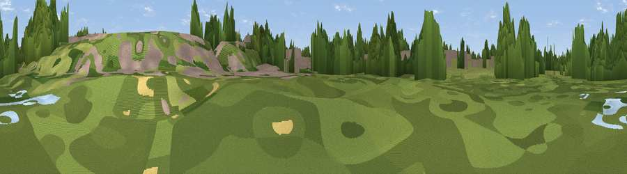

Viewpoint near Ickleford
#46061 in England · top 99% of its area beats it · near Ickleford · footpathWhere it is
The exact computed spot (TL 18726 30997). Click the marker for map links.
Public access: a public right of way passes within 47 m of this spot. Computed from Natural England's CRoW access layer and OpenStreetMap rights of way — not the legal definitive map. Always verify locally.
The view, rendered

A 360° render of this exact spot computed from the terrain model, tree cover and land cover — summer colours, afternoon light, calibrated against photographs of famous viewpoints. Real trees, hedges and buildings will differ in detail.
The panorama
Grey silhouette: terrain skyline in each direction (720 bearings, Earth curvature and refraction included). Dashed green: skyline with trees (+15 m) and buildings (+8 m) as obstacles. Blue strip: how far the ground is visible on each bearing.
Where the view opens
Wedge length = distance to the farthest visible ground on that bearing (vegetation-aware). Rings at 10, 25 and 50 km.
What fills the view
54% woodland · 25% grassland · 18% built-up · 3% cropland
Angular shares of the visible panorama (visual magnitude), not map area. Landscape diversity 0.47 (0–1 Shannon).
Key numbers
More beautiful places nearby
The staircase of upgrades: each row has a higher view potential than everything closer. Driving times are estimates from straight-line distance, calibrated against real road routing — check an actual route before setting out.
| Place | Direction | Drive | Score |
|---|---|---|---|
| Viewpoint near Ickleford | WSW · 2 km | ~6 min | 17.9 |
| Viewpoint near Pirton | W · 4 km | ~10 min | 32.8 |
| Viewpoint near Pirton | W · 5 km | ~12 min | 52.8 |
| Viewpoint near Great Offley | WSW · 6 km | ~12 min | 54.4 |
| Viewpoint near Hexton | W · 6 km | ~13 min | 65.4 |
| Beacon Hill | WSW · 27 km | ~43 min | 74.1 |
| Viewpoint near Halton | WSW · 36 km | ~55 min | 74.3 |
| Coombe Hill Monument | SW · 42 km | ~61 min | 75.5 |
51.96478, -0.27333 · source: osm viewpoint · position refined by local search. Computed location — check access rights before visiting.